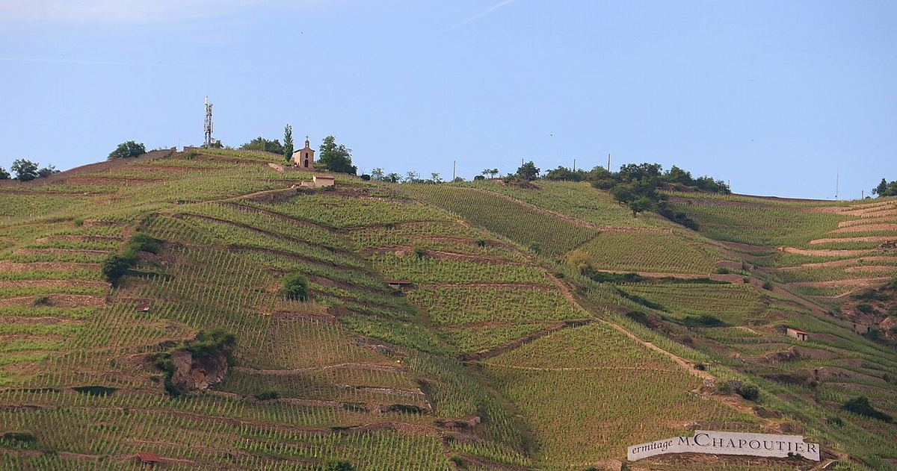

BLANC
Maison de Tain-l’Hermitage dont les origines remontent à 1808, grand propriétaire sur la colline de l’Hermitage et pionnière de la biodynamie et des étiquettes en braille.

La maison Chapoutier plonge ses racines en 1808 à Tain-l’Hermitage, sur les rives du Rhône, face à Tournon. La famille acquit peu à peu des vignes sur la colline de l’Hermitage jusqu’à en devenir l’un des principaux propriétaires. En 1990, Michel Chapoutier prit la direction et transforma la maison : il convertit les vignes à la biodynamie et donna la priorité aux vins parcellaires.
Depuis 1996, Chapoutier imprime ses étiquettes en braille, en hommage à Maurice de la Sizeranne, ancien propriétaire de l’une de ses parcelles de l’Hermitage et promoteur de l’éducation des aveugles ; son nom est porté par l’Hermitage rouge Monier de la Sizeranne.
La gamme couvre les grandes appellations du Rhône septentrional — Hermitage, Crozes-Hermitage, Saint-Joseph, Côte-Rôtie, Condrieu — ainsi que Châteauneuf-du-Pape, avec La Bernardine, et d’autres secteurs du sud. Hors de la vallée du Rhône, la maison possède des vignes en Roussillon, en Alsace et en Australie.
Les rouges reposent sur la syrah au nord et sur le grenache au sud, les blancs de l’Hermitage sur la marsanne. Le style maison cherche à exprimer le sol de chaque parcelle, avec des vins au fruit précis et bien structurés.
La colline de l’Hermitage, granitique dans sa partie ouest et aux sols plus variés vers l’est, se divise en lieux-dits de grande réputation, dont Chapoutier tire plusieurs vins parcellaires.
Elle dispose d’un caveau de dégustation et de vente à Tain-l’Hermitage.